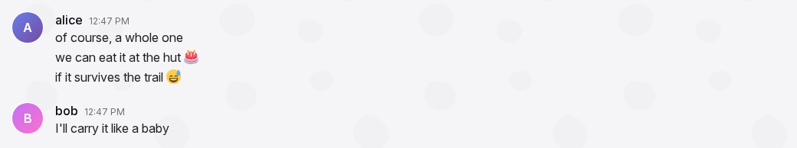
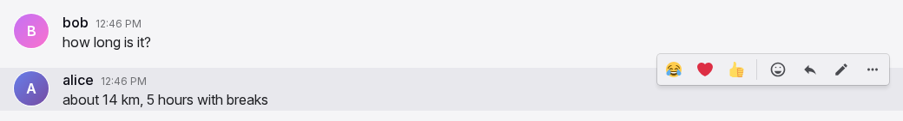
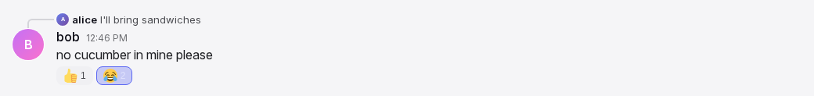
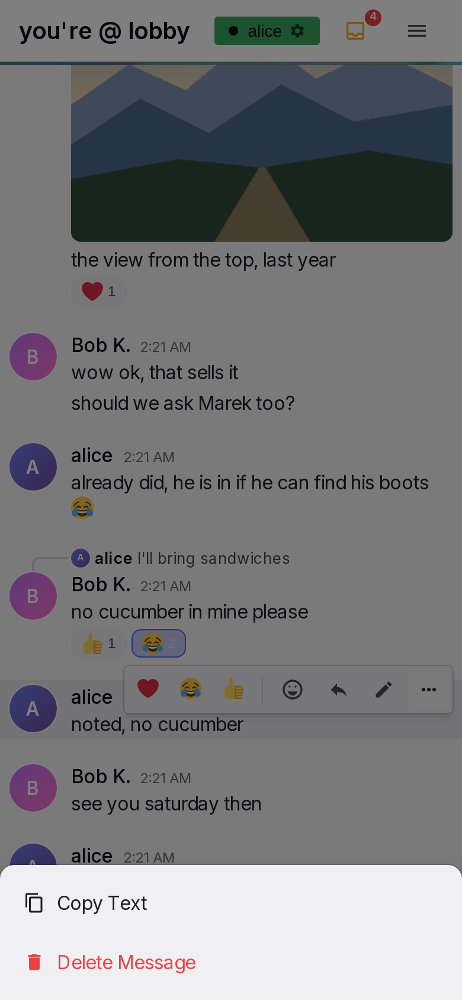

Message row and actions
A message row is one message as it appears in the conversation: who wrote it, when, the text or media, the replies and reactions attached to it, and the actions the reader can take on it. Rows from the same author within an hour form a group under one header. Everything a reader can do to a message happens in the row: react, reply, edit, delete, copy, open media.
Anatomy




- Avatar. A 40 px circle on the left: the profile picture, or a coloured disc with the first letter of the username. Only on header rows; other rows keep the column empty.
- Header. Name, bot badge if the author is a bot, and time. Only on the first row of a group.
- Reply quote. On replies only, a line above the header: a 16 px avatar, the original author's name and one line of the original text, joined to the avatar below by a curved connector.
- Content. The text with links and emoji, or the media: images in a gallery, videos, GIFs. A text row may end with "(edited)".
- Link cards. Under the text, one card per link with a preview, at most five.
- Reaction pills. Under the content: the emoji and the count, the reader's own reactions highlighted.
- Action bar. Top right of the row, shown on hover or after a tap: quick reactions, Add Reaction, Reply, Edit on own text rows, the GIF star on phones, More.
- Popups. The reaction picker, the More menu and the delete dialog open from the bar. On a phone the picker and the menu are bottom sheets.
- System line. In the lobby, a centred italic line when someone joins or leaves. It has no header, no actions and no hover.
Rules
Header and grouping
MR-01A row shows a header (avatar, name, time) when it is the first message shown, when its author differs from the previous message, when it is a reply, or when an hour or more passed since the previous message. Other rows show only their content, aligned to the same text column.
MR-02A header row has 17 px of space above it. Rows inside a group have none.
MR-03The name is the author's display name, or the username when no display name is set. Emoji in a name show as images at text size.
MR-04A bot author has a small robot badge after its name.
MR-05The time is small and muted, on the same line as the name. Today shows the time only. Yesterday shows "Yesterday" and the time. The same year shows the date and time. Older shows the full date and time. Rows without a header show no time.
MR-06Times are in the user's time zone and in the date order and clock style from Settings. The defaults are day-month order and a 24-hour clock. Labels follow the clock: a message from today reads "Yesterday" once midnight passes.
MR-07Own messages and other people's messages look the same. Only the available actions differ.
MR-08The pointer over a row tints the row. The tint stays while the row's picker, menu or dialog is open.
MR-09A deleted message disappears for every reader. There is no placeholder and no undo. The groups around it are formed again.
Text
MR-10Text is shown as typed: line breaks are kept, long words break, nothing is interpreted. There is no formatting syntax and no mention syntax. The only transformations are links and emoji. Typed markup appears as text.
MR-11A message holds at most 4000 characters, the same limit as the input box.
MR-12Links are recognised in text: addresses that start with http:// or https://, addresses that start with www., and bare domains that end in .com, .org, .net, .io, .dev, .app, .co, .me, .info, .edu or .gov. Trailing punctuation stays outside the link. A closing bracket that balances an opening bracket inside the address stays inside it, so an encyclopedia link keeps its tail.
MR-13A link shows as typed, in the accent colour, underlined on hover only. It opens in a new tab. The domain of an e-mail address is not a link.
MR-14An edited text row ends with "(edited)" in small placeholder-coloured text.
Emoji
MR-15Emoji in text show as images from one consistent set, not as the device's own glyphs, so every reader sees the same picture. Skin tones, flags, keycaps and joined sequences are one image each.
MR-16In mixed text an emoji is 1.2 times the text size. A message that consists only of emoji and whitespace shows them at 3 times the text size. A link or any other text in the message turns this off.
MR-17A custom pack emoji is written as ":shortcode:" and shows as the pack image at the same sizes. An unknown shortcode stays text. A shortcode inside a link stays text.
MR-18Emoji in messages load before the row is shown, so they do not pop in while the reader reads.
Link cards
MR-19A text message with links gets one preview card per link, at most five, in text order. A message with media gets no cards. An admin switch turns previews off for everyone; the default is on.
MR-20A card shows the site name, the title and the description of the page, and a thumbnail on the right when the page has one. A card appears only when the page has a title or a description. The description is cut at 300 characters.
MR-21The whole card is one link that opens in a new tab. The card has an accent bar on the left and is at most 520 px wide, full width on a phone.
MR-22Cards appear when the server has read the page, a moment after the message. A reader who is at the bottom of the list stays at the bottom when a card appears. A card, once shown, stays with the message. An edit that adds or removes a link adds or removes its card.
MR-23When the admin switch for media caching is on, a link to a video or audio file shows a player instead of a card: the site name and the title above the player. A player downloads nothing until the user plays it.
Images, videos and GIFs
MR-24A message with media shows no text. One image shows at its own ratio, at most 400 px wide and 350 px high on desktop, full width and at most 450 px high on a phone. While it loads, a 4:3 box of the sidebar colour holds its place.
MR-25Several images form a gallery of square cropped thumbnails in rows of two or three, with 4 px gaps. Two and three images make one row. Four make two and two. Five make two and three. Six make three and three. Larger counts continue the pattern of twos and threes.
MR-26A tap or click on an image opens the gallery viewer at that image, with this message's images only. The viewer is on the timeline page.
MR-27A video shows its poster frame under a dark tint with a round play icon. A tap turns on the controls and plays. When it ends or is paused at the start, the poster and the icon come back. On an iPhone a video plays in the phone's full-screen player.
MR-28A GIF keeps its own ratio, at most 360 px wide, never cropped. It plays by itself, muted and looped. While it loads, a small spinner shows after a quarter second. When the GIF no longer exists, the row reads "GIF unavailable".
MR-29When the browser blocks autoplay, the next tap or key press anywhere starts every paused GIF.
MR-30A GIF has a favourite star at its top right corner. On desktop the star shows on hover; a favourited star is gold and always shows. A click changes the favourite and nothing else. On a phone the corner star only marks a favourite; favouriting is done from the star in the action bar.
MR-31On hover a GIF shows "via {name}" at its bottom left, the display name of the person who first sent it.
Reply quote
MR-32A reply shows the quote line above its header: a 16 px avatar, the original author's display name, and the original text on one line with an ellipsis, two lines on a phone. For a media-only original it reads "Click to see attachment". The quote shows emoji as small images and no links.
MR-33A curved connector runs from the quote's avatar to the reply's avatar. A reply always starts a group, so it always has a header.
MR-34A tap or click on the quote scrolls the list to the original message, centred, and tints it for two seconds. When the original is not loaded yet, the list loads older messages until it is.
MR-35When the original message was deleted, the quote reads "Original message unavailable" and the connector stays.
MR-36While the pointer is over the quote, the action bar hides so the quote stays readable.
MR-37While the user composes a reply to a message, that message has an accent tint. See Input box.
Reactions
MR-38Reactions appear as pills under the content: the emoji at 18 px and the count of people. Pills are in the order the emoji were first used on the message. The pill of a reaction the reader has given is highlighted with the accent colour.
MR-39The pill's tooltip lists the people who reacted, in the order they reacted, by display name.
MR-40A tap or click on a pill adds the reader's reaction with that emoji, or removes it when the reader already has it. The change shows at once, before the server answers. See General rules.
MR-41The action bar starts with three quick reactions: the reader's three most used reaction emoji, padded with ❤️, 😂 and 👍 until there are three. Only reactions count; emoji typed into messages do not change the quick set.
MR-42Add Reaction opens the emoji picker for this message, with search, recents, the custom packs and the categories, as on the pickers page. A pick closes the picker and adds or removes that reaction. On desktop the picker opens under the button, flipped above when there is no room, and stays inside the window. On a phone it is a bottom sheet.
MR-43While the picker is open the row keeps its action bar and its tint. A tap outside the picker, or Escape, closes it and does nothing else.
MR-44A reaction also moves the emoji to the front of the reader's recent emoji.
MR-45Anyone who can see a message can react to it, own messages included, also in a room where they may not write. There is no limit on reactions. System lines take no reactions.
Action bar
MR-46On desktop the bar appears at the top right of the row while the pointer is over the row, and while one of its buttons has keyboard focus. It stays while the row's picker, menu or dialog is open. It is not shown on system lines and not while the row is edited.
MR-47Button order: the three quick reactions, a divider, Add Reaction, Reply, the GIF star on phones, Edit on the reader's own text rows, More. More is present when the row has text to copy or is the reader's own.
MR-48Icons are 18 px, Add Reaction 20 px. Buttons tint on hover and shrink slightly while pressed.
MR-49Reply opens the reply bar in the input box and moves focus into the draft in the same tap. See Input box.
MR-50On a touch screen, a tap on a row shows its bar. Only one row shows a bar at a time. The tap that reveals the bar also acts on what was tapped: a link opens, a pill toggles, an image opens the viewer. The bar appears after the tap, never under the finger.
MR-51On a touch screen the bar hides 5 s after the last touch in the row, or after the list scrolls more than 50 px. Touches in the row's picker, menu or dialog count as touches in the row, and the bar never hides while one of them is open. A mouse on a touch-capable device keeps the hover rule.
MR-52On a phone the bar's buttons are larger, and the bar also holds the GIF star for the row's first GIF.
MR-53A long press on a row does nothing.
More menu
MR-54More opens a menu with "Copy Text" when the row has text, and "Delete Message" in red on the reader's own rows. On desktop it is a dropdown under the button, flipped above when there is no room. On a phone it is a bottom sheet over a dimmed page.
MR-55A tap outside the menu closes it and presses nothing underneath. Escape closes it. Scrolling does not close it, also not the scroll caused by a phone keyboard closing.
MR-56Copy Text copies the message text as typed, with shortcodes and links as text. The menu closes. There is no further feedback.
Editing
MR-57The author can edit their own text rows at any time. Media rows cannot be edited. Admins cannot edit other people's messages.
MR-58Edit replaces the content with an editor in the same row. The header stays. The editor starts with the current text, looks like the input box, grows to 200 px, then scrolls. Under it: "✓ Save", "✕ Cancel", and on desktop the hint "Enter to save · Shift+Enter for newline · Esc to cancel".
MR-59The editor takes focus with the caret at the end. On a phone a closed keyboard stays closed and an open keyboard moves to the editor.
MR-60On a device that cannot touch, Enter saves and Shift+Enter adds a line. On a touch device Enter adds a line. Escape cancels. During input method composition Enter and Escape do nothing.
MR-61Save with unchanged, empty or whitespace-only text closes the editor and changes nothing. Save with changed text updates the message for every reader and adds "(edited)". The edit holds at most 4000 characters.
MR-62One editor is open at a time. Edit on another row drops the first draft. While a row is edited its action bar is hidden, the row keeps receiving live changes, and its link cards stay visible. When the message is deleted elsewhere, the editor disappears.
MR-63Nothing typed in the editor reaches the server before Save.
Delete
MR-64The author can delete their own messages at any time, media rows included. Admins cannot delete other people's messages.
MR-65Delete Message opens a dialog over the whole page: "Delete Message", "Are you sure you want to delete this message?", a preview of the message (avatar, name, time, up to three lines of text or the first image, video poster or "GIF attachment"), and the buttons "Cancel" and "Delete". On desktop a tip says that holding Shift skips the dialog.
MR-66Delete has focus when the dialog opens, so Enter confirms. Escape, Cancel and a tap on the dim area cancel. On a phone the buttons stack full width, Delete above Cancel, and there is no tip.
MR-67Shift+click on "Delete Message" deletes at once without the dialog.
MR-68After a delete the row disappears for every reader at once. Replies to it keep their header and show "Original message unavailable".
Pending and failed messages
MR-69A message the reader just sent appears at once as a full row, faded, at the end of the list, with the header rules of a normal row. It becomes a normal row when the server accepts it. Messages sent quickly keep their order.
MR-70While files upload, the pending row shows the file names, one progress bar for the message, and "Cancel upload". Cancel removes the pending message.
MR-71A message that could not be sent shows "Failed", the reason, "Retry" and "Remove". Remove deletes it from this device only. A message that waited more than one day shows as failed.
MR-72A pending message offers Edit on text rows and Remove, acting on the device. It offers no reactions and no Reply.
System lines and bot rows
MR-73In the lobby, a centred italic line appears when a person's first session joins or last session leaves, with a random text from the configured lists. The line is not stored; a reload removes it.
MR-74A bot message may contain an "install it" link. It starts the installation of Yap on the device. See Offline and installation.
Without a connection
MR-75Reactions, edits and deletes need a connection. A tap on a pill, a quick reaction, Save or Delete without a connection changes nothing and shows "Needs a connection" at the row for two seconds. Reply, Copy Text and opening media work as usual.
States
| State or trigger | Input | What the user sees |
|---|---|---|
| Same author within an hour | all | One header, then rows without avatar, name or time. |
| Author change, reply, or an hour passed | all | A new header with 17 px above it. |
| Pointer over a row | mouse | Row tinted, action bar at the top right. |
| Keyboard focus on a bar button | keyboard | The bar is visible. |
| Pointer over the reply quote | mouse | The bar hides. |
| Tap on a row | touch | The bar shows after the tap; the tapped thing acts. Other rows' bars hide. |
| 5 s without a touch, or a 50 px scroll | touch | The bar fades out. Not while a picker, menu or dialog is open. |
| Long press | touch | Nothing. |
| Tap on a pill | mouse, touch | The reader's reaction toggles at once; the pill highlight and count change. |
| Pointer over a pill | mouse | Tooltip with the display names, in reaction order. |
| Quick reaction tap | mouse, touch | Reaction toggled at once. |
| Add Reaction | mouse, touch | Picker under the button (desktop) or bottom sheet (phone). Row keeps bar and tint. |
| Pick in the picker | mouse, touch | Picker closes; reaction toggled; emoji moved to the front of recents. |
| Tap outside the picker, Escape | mouse, touch, keyboard | Picker closes; nothing else happens. |
| Reply | mouse, touch | Reply bar in the input box, draft focused, row tinted. |
| More | mouse, touch | Dropdown (desktop) or bottom sheet (phone) with Copy Text and, on own rows, Delete Message. |
| Tap outside the menu | mouse, touch | Menu closes; nothing underneath is pressed. |
| Scroll with the menu open | touch | Menu stays open. |
| Copy Text | mouse, touch | Text copied as typed; menu closes. |
| Edit | mouse, touch | Editor in the row, caret at the end, bar hidden. Phone: keyboard state unchanged. |
| Enter in the editor | keyboard, no touch | Saves. |
| Enter in the editor | touch device | Newline. |
| Escape in the editor | keyboard | Cancels. |
| Save, unchanged or empty | all | Editor closes, message unchanged. |
| Save, changed | all | New text for everyone, "(edited)" appended. |
| Delete Message | mouse, touch | Dialog over the page with the preview; Delete focused. |
| Shift+click Delete Message | mouse | Deleted at once. |
| Enter, Escape, tap on the dim area | keyboard, mouse, touch | Confirms, cancels, cancels. |
| Message deleted | all | Row gone for everyone; replies show "Original message unavailable". |
| Tap on the quote | mouse, touch | List scrolls to the original, centred, tinted for 2 s; older messages load if needed. |
| Tap on an image | mouse, touch | Gallery viewer with this message's images. |
| Tap on a video | mouse, touch | Controls on, playing; iPhone full-screen player. |
| Video ends | all | Poster and play icon back. |
| GIF loading | all | Spinner after 0.25 s. |
| Autoplay blocked | all | The next tap or key starts all GIFs. |
| Pointer over a GIF | mouse | Corner star and "via {name}". |
| Star tap | mouse, touch | Favourite toggled; nothing else. |
| Link in text | mouse, touch | Opens in a new tab. |
| Card arrives | all | Card under the text; a reader at the bottom stays at the bottom. |
| Own message sent | all | Faded full row at the end at once. |
| Message accepted | all | Row becomes normal. |
| Send failed | all | "Failed", reason, Retry, Remove. |
| Files uploading | all | File names, progress bar, "Cancel upload". |
| No connection, reaction, Save or Delete | all | Nothing changes; "Needs a connection" at the row for 2 s. |
| Someone joins or leaves the lobby | all | Centred italic system line. |
Wording
| Where | Text |
|---|---|
| Edited marker | "(edited)" |
| Bot badge tooltip | "Bot" |
| Bot install link | "install it" |
| Time, yesterday | "Yesterday {time}" |
| Quote of a media-only original | "Click to see attachment" |
| Quote of a deleted original | "Original message unavailable" |
| Image alt text | "Uploaded image" |
| GIF missing | "GIF unavailable" |
| GIF sender | "via {name}"; tooltip "Uploaded by {name}" |
| GIF star tooltips | "Add to favorites"; "Remove from favorites" |
| Bar tooltips | the emoji itself; "Add Reaction"; "Reply"; "Edit"; "More" |
| Video play control | "Play video" |
| More menu | "Copy Text"; "Delete Message" |
| Editor | "✓ Save" (tooltip "Save"); "✕ Cancel" (tooltip "Cancel"); "Enter to save · Shift+Enter for newline · Esc to cancel" |
| Delete dialog | "Delete Message"; "Are you sure you want to delete this message?"; "GIF attachment"; preview alt texts "Attachment", "Video attachment"; "Pro tip: hold Shift when deleting to skip this confirmation." with Shift as a keycap; "Cancel"; "Delete" |
| Pending row | "Cancel upload"; "Failed"; "Retry"; "Remove" |
| Without a connection | "Needs a connection" |
| Lobby join lines (configured; defaults) | "{0} just dropped", "{0} is here", "{0} arrives", "W {0} joined", "{0} spawned in", "{0} returns" |
| Lobby leave lines (configured; defaults) | "{0} dipped", "{0} ghosted us", "{0} went to touch grass", "{0} logged off", "{0} left on read", "{0} has left the chat", "rip {0}" |
| Lobby lines when the lists are missing | "{0} joined the chat"; "{0} left the chat" |
Related
- Input box for sending, the reply bar and the pending row's origin.
- Emoji and GIF pickers for the reaction picker's content.
- Timeline and media for the list, scrolling, the gallery viewer and loading older messages.
- Settings for the time zone, date order and clock style.
- Administration for the link preview and media caching switches.
- Offline and installation for queued messages and installing Yap.
- Presence for the lobby join and leave lines.